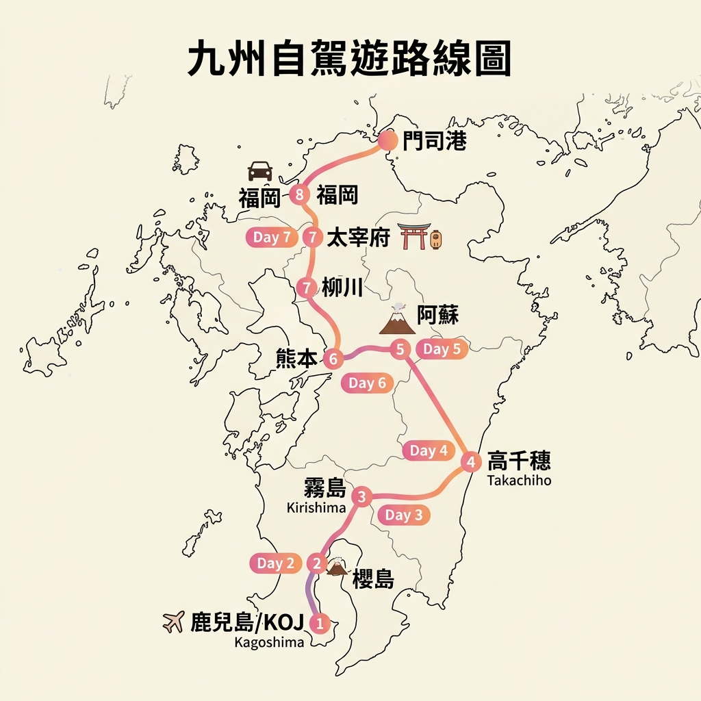

九天八夜九州主行程：1/27 福岡住一晚，鹿兒島兩晚、霧島溫泉一晚、熊本兩晚、福岡兩晚，2/4 第一組返台；第二組延住福岡兩晚，2/6 返台。
兩組旅客皆於 1/27 抵達福岡；第一組 2/4 回台，第二組延住至 2/6。
星宇航空 STARLUX
中華航空 China Airlines・2/5～2/6 延伸行程待排
已確認 1/30 10:00 鹿兒島中央站前店取車，2/2 10:00 福岡機場出發航站樓店還車（甲租乙還）。
適合 Day 2 搭新幹線南下鹿兒島前寄放不需要帶走的大型行李，Day 7 回到福岡後再領取。
另有博多站與福岡市內合作住宿之間的當日行李配送，單件 ¥1,500；14:00 前寄件、18:00 後取件。實際價格、可用住宿及容量以官方公告為準。
查看 Crosta 博多寄物資訊
舊時間表已作廢；目前先以確定住宿城市與航班建立新版骨架。
飛機降落！依序辦理入境手續、衛生申報與行李提領，完成後等待租車行的免費接駁巴士。
搭接駁車至機場外租車營業所。攜帶護照、台灣駕照正本與日文譯本辦理手續，仔細確認車輛外觀（拍照存證），啟用 ETC 卡。
體驗世界罕見的天然砂蒸溫泉！穿著浴衣躺在海灘上，享受 70℃ 熱砂覆蓋全身的奇妙體驗。
渡輪甲板上「やぶ金」薩摩炸魚餅烏龍麵，正面欣賞噴煙櫻島——船程只有 15 分鐘！
薩摩黑豬炸排「黒かつ亭」+ 元祖白熊冰「むじゃき」，完美的鹿兒島之夜。
今天行程充實但精彩！取車後先南下指宿體驗砂浴，午後回鹿兒島港搭渡輪去櫻島。渡輪甲板「やぶ金」烏龍麵只有 15 分鐘可吃，動作要快！
日本自駕交通規則與台灣不同，在出發前熟悉規則能讓旅程更安心、順暢。
透過互動式清單，隨時追蹤您的準備進度。進度會自動儲存在您的瀏覽器中。